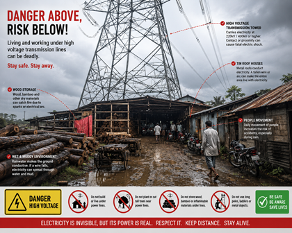

জনসুরক্ষা সচেতনতা
এই ছবিতে এমন একটি বিপজ্জনক পরিস্থিতি ধরা পড়েছে, যেখানে মানুষ হাই ভোল্টেজ ট্রান্সমিশন করিডরের একেবারে গা ঘেঁষে থাকেন ও কাজ করেন — গ্রামীণ ও আধা-শহুরে ভারতের হাজার হাজার জনবসতির এটাই বাস্তব ছবি।
⚠️ জনসুরক্ষা বিজ্ঞপ্তি: ভারতের বিদ্যুৎ বিধি অনুযায়ী হাই ভোল্টেজ ট্রান্সমিশন করিডরের চারপাশে নির্দিষ্ট নিরাপদ দূরত্ব বজায় রাখা বাধ্যতামূলক। ট্রান্সমিশন লাইনের খুব কাছে বসবাস করা, কাজ করা, মালপত্র মজুত রাখা বা নির্মাণ করলে গুরুতর দুর্ঘটনার ঝুঁকি অনেকটাই বেড়ে যায়, এবং তা কেন্দ্রীয় বিদ্যুৎ কর্তৃপক্ষের (CEA) নিরাপত্তা বিধির পরিপন্থীও হতে পারে।
দৃশ্যটি
বিশাল এক হাই ভোল্টেজ ট্রান্সমিশন টাওয়ার — সম্ভবত 220 kV বা 400 kV লাইনের — দাঁড়িয়ে আছে চালু একটি কাঠগোলার ঠিক উপরে। পরিবাহী তারের একেবারে নীচে খোলা জমিতে ভারী কাঠের গুঁড়ি স্তূপ করে রাখা। টাওয়ারের পায়ের নীচের সেই সংকীর্ণ জায়গাতেই রয়েছে ছাউনি দেওয়া শেড, টিনের চালের বসতবাড়ি, গাড়ি আর মানুষজন। পৃথিবীর বহু জনবসতিতেই হাই ভোল্টেজ করিডরের গা ঘেঁষে মানুষ বাস ও কাজ করেন, এমন পরিস্থিতি দেখা যায়।
শুকনো ও সদ্য কাটা কাঠ খুব সহজেই আগুন ধরে। একটিমাত্র বৈদ্যুতিক আর্ক বা স্ফুলিঙ্গ থেকেই ভয়াবহ আগুন লেগে যেতে পারে, আর পালানোর কোনও নিরাপদ পথ থাকে না।
টিনের চাল বিদ্যুৎ পরিবহন করে। লাইনে গোলযোগ হলে তারের সঙ্গে সরাসরি ছোঁয়া না লাগলেও টিনের চাল প্রাণঘাতী হয়ে উঠতে পারে।
চালু টাওয়ারের নীচে ঠাসাঠাসি মালপত্র থাকলে দমকলকর্মী ও উদ্ধারকারীদের ঢোকা ভীষণ কঠিন হয়ে যায়, ফলে বিপদের সময় সাহায্য পৌঁছতে দেরি হয়।
শিশুরা খেলে, শ্রমিকরা হেঁটে যান, রোজকার যাতায়াতকারীরাও এই এলাকা দিয়েই যান — অনেকেই জানেন না, তাঁদের মাথার মাত্র কয়েক মিটার উপর দিয়ে কত ভোল্টেজের লাইন গিয়েছে।
মাত্রাটা বুঝে নিন
ভারতের ট্রান্সমিশন নেটওয়ার্কে যে ভোল্টেজ বয়ে যায়, বাড়ি বা অফিসের ভোল্টেজ তার তুলনায় নস্যি। একটিমাত্র গোলযোগ মুহূর্তে, নিঃশব্দে বিপুল শক্তি ছেড়ে দিতে পারে।
মরসুমি বিপদ
দক্ষিণ এশিয়া জুড়ে প্রবল বর্ষণ বৈদ্যুতিক বিপদের ঝুঁকি নাটকীয়ভাবে বাড়িয়ে দিতে পারে।
জল জমে থাকা মাটিতে বিদ্যুৎ পরিবহনের ক্ষমতা অনেক বেড়ে যায়। ছিঁড়ে পড়া বা ত্রুটিপূর্ণ লাইনের ফাঁকা কারেন্ট জলে ভেজা মাটির বিশাল এলাকায় ছড়িয়ে পড়তে পারে।
হাই ভোল্টেজ তার জলমগ্ন উঠোন, পুকুর বা নর্দমার মধ্যে বা কাছে পড়লে সেগুলি মুহূর্তে প্রাণঘাতী হয়ে ওঠে।
বর্ষার ঝড়ে গাছ, টিনের পাত, বাঁশ বা ভারা উড়ে বা ভেঙে চালু তারের উপর গিয়ে পড়তে পারে। টাওয়ারের নিরাপদ দূরত্বের এলাকায় এমন কিছু পড়ার মতো কোনও ফাঁক থাকে না।
ট্রান্সমিশন টাওয়ার বজ্রপাতের অন্যতম প্রধান লক্ষ্য। ঝড়ের সময় বাজ পড়লে হঠাৎ গোলযোগ হয়ে গোটা করিডর জুড়ে শক্তি ছড়িয়ে পড়তে পারে।
অধিকাংশ মানুষ ভাবেন, বিদ্যুতের শক লাগতে হলে তারে সরাসরি হাত দিতে হয়। হাই ভোল্টেজের গোলযোগ কিন্তু এভাবে কাজ করে না।
স্টেপ ভোল্টেজ: কোনও তার ভেজা মাটি ছুঁলে বিপজ্জনক বৈদ্যুতিক বিভব বৃত্তাকারে চারদিকে ছড়িয়ে পড়ে। তখন আশপাশে কোনও তার চোখে না পড়লেও ওই এলাকা দিয়ে হাঁটলে এক পা থেকে অন্য পায়ের মধ্য দিয়ে আপনার শরীরেই বিদ্যুতের বর্তনী সম্পূর্ণ হয়ে যেতে পারে।
টাচ ভোল্টেজ: গোলযোগের জায়গার কাছে যে-কোনও ধাতব বস্তু — বেড়ার খুঁটি, কাঠ তোলার ফ্রেম, গাড়ি — প্রাণঘাতী চার্জ বহন করতে পারে। সেটি ছুঁলেই বর্তনী সম্পূর্ণ হয়ে যায়।
দুই ক্ষেত্রেই তারে হাত দেওয়ার দরকার পড়ে না। বিদ্যুৎ নিজেই আপনাকে খুঁজে নেয়।
লুকোনো বিপদ
হাই টেনশন করিডরের কাছে গাছ থাকা নিজে থেকে বিপদ নয় — ঝড় এলে, কিংবা কেউ করাত হাতে নিলেই সেটা বিপদ হয়ে দাঁড়ায়।
ঝড়ের সময় ডালপালা দুলে চালু তারের গায়ে গিয়ে লাগতে পারে। ভেজা কাঠ ও সবুজ পাতা বিদ্যুৎ চলাচলের পথ তৈরি করে দেয়। হাই ভোল্টেজ লাইনে আর্ক হতে পারে — অর্থাৎ সরাসরি ছোঁয়া ছাড়াই আর্দ্র বাতাস, ভেজা ছাল বা ঝুঁকে পড়া ডালের মধ্য দিয়ে বিদ্যুৎ পাশের বস্তুতে লাফিয়ে যেতে পারে।
হাই টেনশন লাইনের নীচে বা পাশের কোনও গাছ নিজে থেকে কখনও কাটবেন না। পড়ন্ত ডাল বা গুঁড়ি চালু তারে ঠেকে যেতে পারে। কয়েক মিটার দূর থেকেও আর্ক হতে পারে। এই কাজ কেবল প্রশিক্ষিত কর্মীরাই, বিদ্যুৎ দপ্তরের আগাম অনুমতি নিয়ে করবেন।
একটি প্রচলিত ভুল ধারণা: অনেকে মনে করেন বিদ্যুৎ কেবল সরাসরি ছোঁয়ার মাধ্যমেই চলে। কিন্তু খুব উচ্চ ভোল্টেজে কোনও বস্তু, ডালপালা, যন্ত্রপাতি বা গাছপালা চালু তারের বিপজ্জনক কাছাকাছি এলেই আর্ক হতে পারে, বিশেষত আর্দ্র বা ভেজা আবহাওয়ায়।
করিডরের মধ্যে বা কাছে উঁচু গাছ লাগাবেন না। হাই টেনশন লাইনের নীচে বাঁশ, লম্বা লোহার পাইপ, ক্রেন বা উঁচু যন্ত্রপাতি ব্যবহার করবেন না। একটু ভুল কোণে ধরলেই বিদ্যুৎ আপনার শরীর দিয়ে পথ খুঁজে নেবে।
নিরাপত্তা বিধি
কমপক্ষে ৩০ মিটার দূরে থাকুন। অন্যদের সতর্ক করুন। সঙ্গে সঙ্গে ফোন করুন।